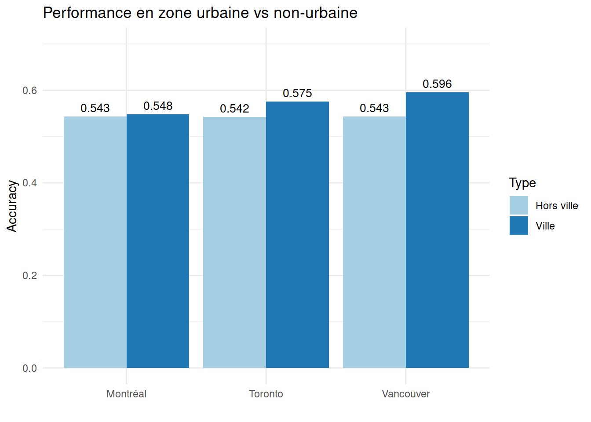

| Parti | Application | Pilote |
|---|---|---|
| bq | 4194 | 39 |
| cpc | 4244 | 97 |
| lpc | 5683 | 66 |
| ndp | 2821 | 52 |
| gpc | 348 | 11 |
| Ville | Nombre d'observations | Pourcentage (%) |
|---|---|---|
| Montréal | 2143 | 12.21 |
| Toronto | 916 | 5.22 |
| Vancouver | 302 | 1.72 |
Ce document présente une analyse approfondie de la robustesse du modèle de prédiction électorale pour les élections fédérales canadiennes 2025. Ce modèle intègre:
L’extension du modèle aux grandes villes vise à améliorer la précision des prédictions dans les centres urbains qui présentent des dynamiques électorales distinctes des régions géographiques plus larges.
L’analyse de robustesse comprend plusieurs dimensions:
L’analyse est basée sur un ensemble de validation comprenant 17,555 observations, avec la distribution suivante:
| Parti | Application | Pilote |
|---|---|---|
| bq | 4194 | 39 |
| cpc | 4244 | 97 |
| lpc | 5683 | 66 |
| ndp | 2821 | 52 |
| gpc | 348 | 11 |
| Ville | Nombre d'observations | Pourcentage (%) |
|---|---|---|
| Montréal | 2143 | 12.21 |
| Toronto | 916 | 5.22 |
| Vancouver | 302 | 1.72 |
| Métrique | Valeur |
|---|---|
| Accuracy globale | 0.5439 |
| Accuracy premier ou deuxième choix | 0.8291 |
| Recall moyen (macro) | 0.4524 |
| Recall pondéré (weighted) | 0.5439 |
| Parti | Précision | Rappel | F1-Score | Support | Top-2 Accuracy |
|---|---|---|---|---|---|
| bq | 0.5430 | 0.8275 | 0.6557 | 4233 | 0.9608 |
| cpc | 0.5669 | 0.5096 | 0.5367 | 4341 | 0.7754 |
| lpc | 0.5185 | 0.4406 | 0.4764 | 5749 | 0.9019 |
| ndp | 0.5629 | 0.4483 | 0.4991 | 2873 | 0.6638 |
| gpc | 0.4483 | 0.0362 | 0.0670 | 359 | 0.0808 |
| bq | cpc | lpc | ndp | gpc | |
|---|---|---|---|---|---|
| bq | 3503 | 799 | 1653 | 427 | 69 |
| cpc | 213 | 2212 | 991 | 410 | 76 |
| lpc | 383 | 1097 | 2533 | 743 | 129 |
| ndp | 134 | 231 | 563 | 1288 | 72 |
| gpc | 0 | 2 | 9 | 5 | 13 |
| Région | Observations | Accuracy | Top-2 Accuracy |
|---|---|---|---|
| ontario | 3899 | 0.5427 | 0.8582 |
| quebec | 9760 | 0.5307 | 0.8097 |
| british_columbia | 1187 | 0.5442 | 0.8273 |
| prairie | 1906 | 0.5845 | 0.8526 |
| atlantic | 803 | 0.6139 | 0.8692 |
| territories | NA | NA | NA |
| Ville | Observations | Accuracy | Top-2 Accuracy |
|---|---|---|---|
| Montréal | 2143 | 0.5483 | 0.8339 |
| Toronto | 916 | 0.5753 | 0.8657 |
| Vancouver | 302 | 0.5960 | 0.8477 |
L’analyse bootstrap permet d’évaluer la stabilité du modèle face à des variations d’échantillonnage.
| Statistique | Valeur |
|---|---|
| Accuracy moyenne | 0.5068 |
| Écart-type | 0.0184 |
| IC inférieur (95%) | 0.4666 |
| IC supérieur (95%) | 0.5435 |
| Coefficient de variation (%) | 3.6306 |
| Ville | Accuracy moyenne | Écart-type | IC inférieur (95%) | IC supérieur (95%) |
|---|---|---|---|---|
| Montréal | 0.5233 | 0.0211 | 0.4771 | 0.5680 |
| Toronto | 0.5744 | 0.0227 | 0.5251 | 0.6189 |
| Vancouver | 0.5979 | 0.0257 | 0.5530 | 0.6556 |
La calibration évalue l’adéquation entre les probabilités prédites par le modèle et les fréquences réellement observées pour chaque parti.
Cette section compare les performances du modèle actuel (avec variables de grandes villes) au modèle précédent (modèle à 6 régions sans variables de villes).
| Métrique | Modèle 6 régions | Modèle 6 régions + 3 villes | Différence | Différence (%) |
|---|---|---|---|---|
| Accuracy globale | 0.5475 | 0.5439 | -0.0036 | -0.6575 |
| Amélioration (%) | NA | NA | NA | NA |
| Zone | Accuracy | Top-2 Accuracy |
|---|---|---|
| Montréal | 0.5483 | 0.8339 |
| Hors Montréal | 0.5433 | 0.8284 |
| Toronto | 0.5753 | 0.8657 |
| Hors Toronto | 0.5422 | 0.8270 |
| Vancouver | 0.5960 | 0.8477 |
| Hors Vancouver | 0.5430 | 0.8287 |

Sur la base de cette analyse de robustesse, nous pouvons tirer les conclusions suivantes:
Performance globale: Le modèle avec variables de grandes villes présente une légère diminution de performance (-0.66%) par rapport au modèle à 6 régions sans variables de villes. L’accuracy globale est de 54.39%, avec une accuracy du premier ou deuxième choix atteignant 82.91%.
Performance différenciée par ville:
Stabilité: L’analyse bootstrap indique une bonne stabilité du modèle, avec un coefficient de variation de 3.63%. Les intervalles de confiance à 95% par ville montrent des plages acceptables, en particulier pour Vancouver.
Limites:
Ce modèle présente donc un intérêt particulier pour les prédictions ciblées en zones urbaines, mais n’est pas recommandé comme remplacement complet du modèle à 6 régions pour les prédictions à l’échelle nationale.